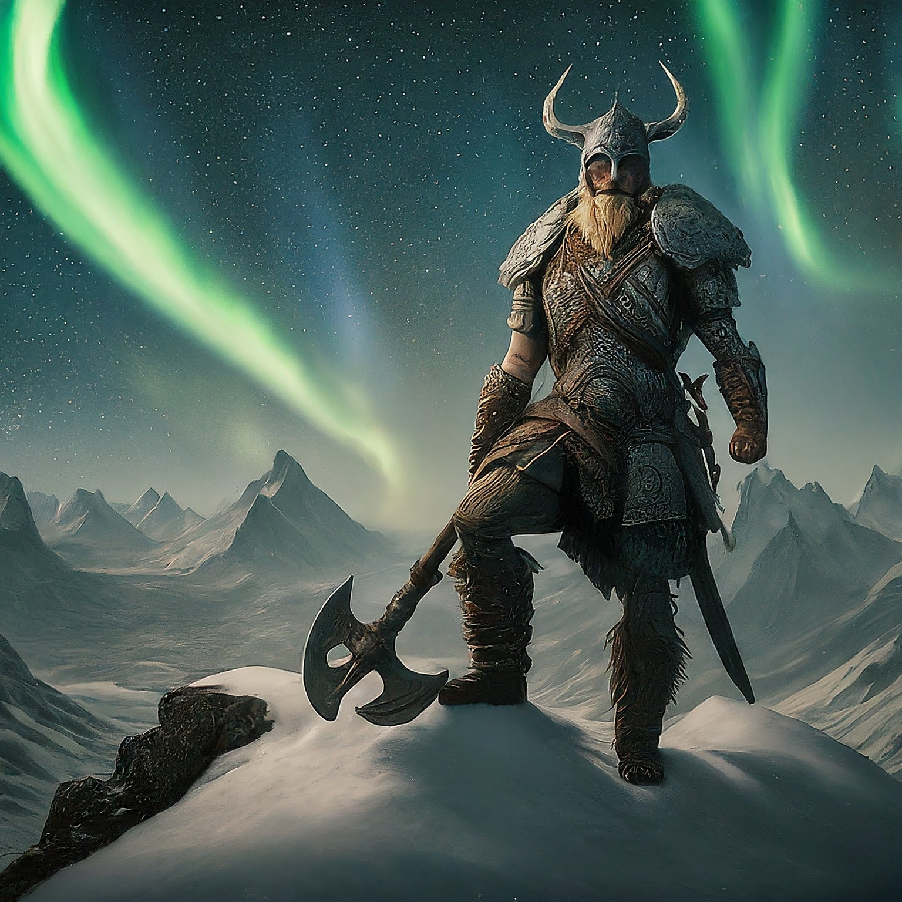
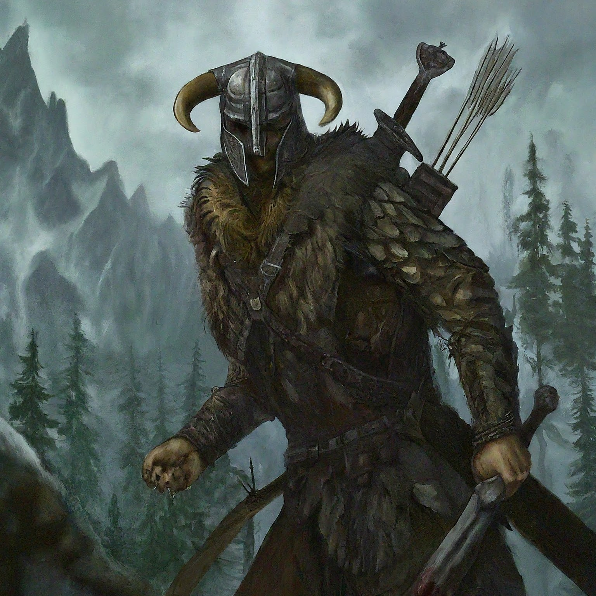

Description
The Elder Scrolls V: Skyrim is a 2011 action role-playing game developed by Bethesda Game Studios and published by Bethesda Softworks. It is the fifth main installment in The Elder Scrolls series, following The Elder Scrolls IV: Oblivion (2006), and was released worldwide for Microsoft Windows, PlayStation 3, and Xbox 360 on November 11, 2011.
The game is set 200 years after the events of Oblivion and takes place in Skyrim, the northernmost province of Tamriel, a continent on the planet Nirn. Its main story focuses on the player's character, the Dragonborn, on their quest to defeat Alduin the World-Eater, a dragon who is prophesied to destroy the world. Over the course of the game, the player completes quests and develops the character by improving skills. The game continues the open world tradition of its predecessors by allowing the player to travel to discovered locations in the game world at any time, and to ignore or postpone the main storyline indefinitely.
Skyrim was developed using the Creation Engine, which was rebuilt specifically for the game. The team opted for a unique and more diverse open world than Oblivion's Imperial Province of Cyrodiil, which game director and executive producer Todd Howard considered less interesting by comparison.
Upon release, the game received critical acclaim, with praise for its character advancement, world design, visuals, and dual-wielding combat. Criticism targeted the melee combat, dragon battles, and numerous technical issues present at launch. The game shipped over seven million units within the first week of its release and had sold over 20 million units by June 2013. It is considered one of seventh generation console gaming's most significant titles and one of the greatest video games ever made.
Three downloadable content (DLC) add-ons were released: Dawnguard, Hearthfire and Dragonborn, which were bundled along with the base game into The Elder Scrolls V: Skyrim - Legendary Edition released in June 2013. A remastered version, The Elder Scrolls V: Skyrim - Special Edition, was released for Windows, PlayStation 4 and Xbox One in October 2016, with all three DLC expansions and a graphical upgrade. A port for the Nintendo Switch was released in November 2017. A separate virtual reality-only version, The Elder Scrolls V: Skyrim VR, was released in November 2017 for PlayStation VR, and for Windows-based VR headsets in April 2018. In addition, the Special Edition was released on PlayStation 5 and Xbox Series X/S as part of the compilation The Elder Scrolls V: Skyrim – Anniversary Edition in November 2021, and for Nintendo Switch in September 2022. Announced at E3 2018, a new video game in the series, The Elder Scrolls VI, is currently in development.[1]
Gameplay
The Elder Scrolls V: Skyrim is a fantasy action role-playing game, playable from either a first or third-person perspective. The player may freely roam over the land of Skyrim, an open world environment based on Scandinavia consisting of wilderness expanses, dungeons, caves, cities, towns, fortresses, and villages.[2] Players may navigate the game world more quickly by riding horses, paying for a ride from a city's stable, or utilizing a fast-travel system that allows them to move their character immediately to a previously discovered location.[3]
At the beginning of the game, players select their character's sex and race, with 10 choices for the latter including races of humans and fantasy races such as elves and orcs. The player chooses the character's appearance; this is not necessarily permanent, however, as an in-game mechanic allows for changing the appearance later.[4] Characters have three primary attributes: health is how much damage the character can take before dying, magicka is depleted to cast spells, and stamina allows the character to perform heavy "power attacks" or sprint. A status bar for each attribute appears onscreen when the attribute falls below its maximum value. Attributes regenerate over time and can be refilled faster by drinking potions, casting regenerative spells, or through various enchantments.[5] Characters gain experience indirectly, via leveling up skills. The 18 skills are divided evenly among the three schools of combat, magic, and stealth. Each skill has its own experience bar, which increases when the character performs an action in-game related to the skill. For example, crafting a dagger increases the Smithing skill, and dealing damage with a bow increases the Archery skill. When a skill's experience bar fills, the skill levels up and the bar is reset. After enough skills level up, the character levels up, enabling the player to increase the maximum value of one of the three attributes and providing a perk point. Perk points can be spent immediately on a skill-specific perk or stored for later use.[6][7]
Non-player characters (NPCs) populate the world; the player may engage them in conversation (potentially leading to new quests or map locations), marry predetermined ones, or engage them in lethal or nonlethal combat. As in previous games in the series, killing certain individuals can make some quests or items unobtainable. Certain NPCs essential to the narrative cannot be killed by the player, and will survive attacks of any magnitude. Committing a crime like murder or theft accrues the player a bounty if the crime is witnessed, leading to confrontations with guards. Depending on some factors, including how serious the crime was, the player can choose to go to jail, pay the guard off, persuade the witness to forget about it, declare that one is a thane of a certain hold (which leads the guard to pardon the player), 'pacify' the guard or silence witnesses through killing them.[8][9]
NPCs frequently offer the player side-quests; some have parameters adjusted based on nearby unexplored areas.[6][10] Some NPCs who are befriended or hired by the player may act as companions who will accompany the player and aid them in combat.[11] A number of individuals have quests that the player needs to complete in order to gain their services as a companion. The player may choose to join factions, organized groups of NPCs—for example, the Dark Brotherhood, a band of assassins.[12] Each of the factions has an associated quest path to progress through.[13]
The player's effectiveness in combat relies on the use of weapons, armor, and enchantments (which may be bought, found from containers, raided from dead bodies, stolen and/or forged) and on the use of magic spells: similarly, spells may be bought, stolen and/or unlocked by finding spell tomes. Weapons, shields, and magic are assigned to each hand allowing for dual-wielding, and can be swapped out through a quick-access menu of favorite items. Some weapons and spells require both hands. Shields can be used to fend off enemy attacks and reduce incurred damage or offensively through bashing attacks. Blunt, bladed, and hacking weapons can be used in close combat and each have specific advantages and roles. Power attacks expend stamina to temporarily stun/stagger an enemy and deal increased damage. Spells have several functions, both in combat (e.g. damaging or confusing enemies, resurrecting dead bodies and conjuring other entities, restoring the player's health and/or stamina) and out (e.g. showing the way to an objective, illuminating a dark room or turning iron into silver).[14] Bows are used for long-range combat and can be used to bash enemies in melee combat. The player can enter sneak mode to pickpocket or deliver powerful sneak attacks to unsuspecting enemies.[15]
When exploring the game world the player may encounter wildlife. Many creatures in the wilderness, such as wolves or bears, are immediately hostile towards the player, while other species are docile and will run away.[2] Skyrim is the first entry in The Elder Scrolls to include dragons in the game's wilderness, although dragons are frequently referenced/mentioned in several of the other games.[16] Like other creatures, dragons are generated randomly in the world and will engage in combat with NPCs, creatures and the player. Some dragons may attack cities and towns when in their proximity.[17] The player character can absorb the souls of dragons in order to use powerful spells called "dragon shouts" or "Thu'um". Each shout contains three words in the language spoken by dragons, and the strength of the shout will vary depending on how many words have been spoken. Some words to shouts can be learned by visiting "word walls" in dungeons or around the wilderness, while other words can be taught by different characters. The words to each shout are unlocked for use by spending the absorbed souls of slain dragons.[18][19] A regeneration period limits the player's use of shouts in gameplay.[20]
Synopsis
Setting:
Skyrim, The Elder Scrolls IV: Oblivion is set 200 years after the events of, although it is not a direct sequel.[19] Skyrim is a cold and mountainous region in the north of the continent of Tamriel. It has traditionally been divided into nine administrative sections, called "holds", each governed by a jarl from a larger town. Of these settlements, five— Solitude, Windhelm, Markarth, Riften, and Whiterun—are larger and more powerful. The landscape is littered with forts, camps, and ruins, some of which were built by the now-extinct race of the Dwemer, or Dwarves. The Nords, one of the human races, view Skyrim as their homeland, though members of other races populate Skyrim as well.
Skyrim is a province of the much larger Empire, which comprises most of Tamriel. The Empire has recently fought a war with the elvish Aldmeri Dominion, who believe that they are racially superior to humans. While the conflict, known as the Great War, ended in a military stalemate after a hard-fought battle at the imperial capital, the greatly weakened Empire was forced to sign a humiliating peace treaty called the White-Gold Concordat.
While most of Tamriel worship a religious pantheon of eight deities, the Nords of Skyrim are accustomed to worshiping a ninth god, Talos, the deified Nord general who founded the Empire. The Dominion, led by the intolerant Thalmor sect, rejects this notion and its implication that a man became greater than any elf. They instituted a clause in the Concordat forbidding Talos worship in the Empire. Motivated in part by this condition, Ulfric Stormcloak, the jarl of Windhelm, leads a rebellion against imperial rule, with the holds divided roughly evenly between the two sides.
In the ancient past, dragons ruled over vast swaths of Tamriel. Their hegemony was overthrown when three human warriors threw the dragon ruler, Alduin, forward in time using an Elder Scroll, a powerful and mysterious artifact. When Skyrim begins, the survival of the last dragon, the sage Paarthurnax, is a secret kept by an order of monks called the Greybeards. Within their monastery atop the Throat of the World, Skyrim's highest mountain, the Greybeards dedicate their lives to the Way of the Voice, a discipline for powerful draconic spells called "shouts". Rare warriors are "Dragonborn", having the ability to learn shouts intuitively by absorbing the souls of dead dragons. Ancient prophecy maintains that Alduin will return to consume the world, and a "Last Dragonborn" will defeat him.
Characters
The player character is Dragonborn and is typically referred to as such. The Dragonborn can be male or female, from one of ten races. Each of the ten races has, in addition to a bonus for certain skills, a power specific to their race – for example, Nords start with a bonus to several martial skills, and the ability to intimidate enemies for a short period. The player can recruit one NPC at a time as a follower, who can travel and fight alongside the Dragonborn; there are forty-five available followers in the base game, with thirteen more added in the downloadable expansions.
Outside of followers and Alduin (the primary antagonist) NPCs prominent to the plot of Skyrim include Balgruuf, Jarl of Whiterun, a town in the center of Skyrim; Arngeir, the leader of the Greybeards; Delphine and Esbern, two of the last members of the Blades, an order of warriors sworn to help the Dragonborn but nearly wiped out after the Great War; and Paarthurnax, the last surviving dragon and grandmaster of the Greybeards. Also notable are General Tullius and Ulfric, who command the Imperial Legion and Stormcloaks respectively. During the course of the game, the Dragonborn can join and assist either side to gain victory in the civil war. Other factions that the Dragonborn can elect to join include the Companions, a noble order of warriors; the College of Winterhold, an institution dedicated to the mystic arts and magic; the Thieves Guild, a league of burglars who have fallen on hard times; and the Dark Brotherhood, a fellowship of assassins.
Plot
Imperial soldiers have captured Ulfric Stormcloak and are preparing to execute him, along with the player who was caught up in the skirmish and mistakenly believed to be a rebel. Before the player can be executed, Alduin appears, attacking the imperial outpost and thus rescuing the player. The player escapes and warns Jarl Balgruuf of Whiterun of the dragon attack. When another dragon attacks and is slain, the dragon's soul flows into the player character, causing the nearby guards to call them "Dragonborn". The Greybeards summon the Dragonborn to the Throat of the World, where the Dragonborn begins training in the Way of the Voice.
Delphine intercepts the Dragonborn on a training quest and arranges for the Dragonborn to infiltrate the Thalmor Embassy in Solitude, on the (mistaken) suspicion that the Thalmor are responsible for the dragon attacks. There, they learn that Esbern, a Blades lore master obsessed with the prophecy of Alduin's return, is alive and hiding in Riften. The Dragonborn rescues Esbern from Thalmor agents. Esbern leads them to an ancient Blade temple and a massive engraving depicting Alduin's prior defeat. Esbern deciphers that the ancient Nords used a special shout to remove Alduin's ability to fly and render him vulnerable.
Arngeir does not know the shout, which is called Dragonrend and violates the Way of the Voice. Arngeir sends the Dragonborn to Paarthurnax at the summit of the Throat. Paarthurnax reveals that no one living knows Dragonrend, but theorizes that the Dragonborn could learn it by looking through time at the summit, the site of Alduin's banishment. To do this, the Dragonborn retrieves the Elder Scroll used in the banishment from a massive subterranean Dwemer city. The Dragonborn returns to the summit and learns Dragonrend. Alduin attacks. The Dragonborn uses Dragonrend, and together with Paarthurnax, overpowers Alduin, who flees.
The Dragonborn's allies hatch a plan to capture a dragon at Whiterun. The Dragonborn helps negotiate a truce in the civil war to prevent either side from capturing Whiterun during this delicate operation. The captured dragon, Odahviing, questions whether Alduin deserves lordship over dragons. He reveals that Alduin has gone to recover his strength in Sovngarde, the Nord afterlife, where he feeds on the souls of the dead. Since the portal to Sovngarde cannot be reached on foot, Odahviing bargains his freedom in exchange for flying the Dragonborn there. Entering Sovngarde, the Dragonborn meets the three heroes who had defeated Alduin originally. With their help, the Dragonborn kills Alduin and returns to Skyrim.
Upon learning that Paarthurnax is a dragon, the Blades are furious and refuse to associate with the Dragonborn further unless they slay him. When talking to Paarthurnax, he states it is wise not to trust a dragon as their nature is to dominate, but asks, 'what is better: to be born good or to overcome your evil nature through great effort?' leaving the choice to the Dragonborn.
References
All photos were created using Gemini AI